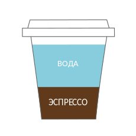
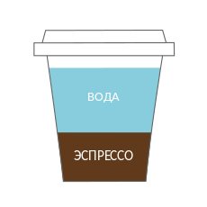

Американо
Американо-эспрессо обычный или двойной, в который после приготовления добавили (30–470 мл) горячей воды. Крепость зависит от количества шотов эспрессо. В Италии и Франции даже не пытайтесь просить Американо, вам принесут лунго.
Американо-эспрессо обычный или двойной, в который после приготовления добавили (30–470 мл) горячей воды. Крепость зависит от количества шотов эспрессо. В Италии и Франции даже не пытайтесь просить Американо, вам принесут лунго.
